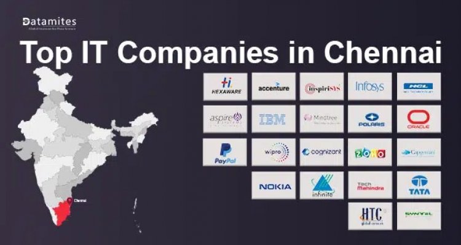

>Chennai, the capital city of Tamil Nadu, is one of the largest metropolitan cities in India. It is known for its rich cultural heritage, beautiful temples, long beaches, and rapidly growing economy. Located on the southeastern coast of India along the Bay of Bengal, Chennai is often called the "Gateway to South India." The city is famous for Marina Beach, one of the longest urban beaches in the world, as well as attractions such as Kapaleeshwarar Temple, San Thome Basilica, and Fort St. George. Chennai is also a major center for education, healthcare, automobile manufacturing, and information technology. It is home to many prestigious institutions, including IIT Madras and Anna University, which produce highly skilled graduates every year. The city has several large IT parks, such as Tidel Park, DLF IT Park, and SIPCOT IT Park, where many multinational companies operate. These organizations provide thousands of employment opportunities in software development, cloud computing, artificial intelligence, cybersecurity, and data science. The people of Chennai are known for their hospitality, respect for tradition, and love of art and music. The city is famous for Bharatanatyam dance, Carnatic music, and the annual December Music Festival. Chennai also offers a wide variety of delicious South Indian dishes, including idli, dosa, sambar, and filter coffee. With its excellent infrastructure, growing industries, modern transportation, and vibrant culture, Chennai continues to attract students, tourists, entrepreneurs, and professionals from across India and around the world, making it one of the country's most important and dynamic cities.